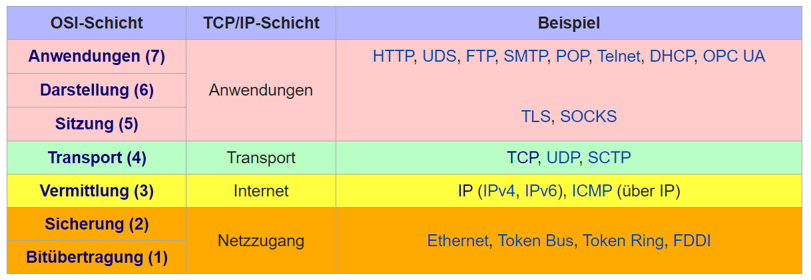

Über das Internet, das WWW, usw..
Sebastian Neumaier
Seit wann gibt es das Internet? Wie funktioniert es?
Wozu gibt es das Internet? Raccoons in funny hats?
Kalter Krieg
Die erste Version des Internets beginnt mit dem kalten Krieg

USA vs. Sowjetunion
1957: Sowjetunion startet Sputnik

Wie reagieren die USA?
Eisenhower gründet zwei Behörden:
- Advanced Research Projects Agency (ARPA)
- National Aeronautics and Space Administration (NASA)
ARPA, Washington, DC, 1963
Intergalactic Computer Network:
- Computer waren
teuer undgroß ! - time-sharing: Einen "brain" Computer der mit billigeren Computern kommuniziert
Bis auf ein Problem...
Zentrale vs. Dezentrale Netzwerke

- Zentral: Jede Kommunikation zwischen zwei Punkten läuft über Kermit.
- Dezentral: Fozzie und Miss Piggy können auch ohne Kermit kommunizieren.
Decentralization!
Erste Version eines dezentralen Internets bei ARPA:
Vor ARPANET gab es auch Kommunikation, z.B. via Morsecode, Flaggen, und "Windmühlen"

Wie funktioniert das?
Das Katzenbild wird in kleinere Pakete aufgeteilt
Die einzelnen Pakete suchen sich unterschiedliche Routen
Jeder Buchstabe ist ein Server (= Computer). Im Internet nennt man sie "Netzwerkknoten"
Wenn die Knoten D und G ausfallen, werden die Pakete über andere Routen geschickt

Das Internetprotokoll
TCP/IP-Protokolle sind Vereinbarungen, nach der die Datenübertragung abläuft

Ist das Internet das WWW?
Nein, wird aber oft so genannt...
Das Internet wurde zu Beginn nur über die Kommandozeile verwendet

World Wide Web
1989 entwickelte Tim Berners-Lee in CERN eine Methode um Textseiten mit "Links" zu verbinden:
- HTTP (HyperText Transfer Protocol)
- URLs (Universal Resource Locators)
- HTML (HyperText Markup Language)
Das Web spricht HTTP
HTTP Anfrage (Request):
- Eine Anfragezeile
- Eine Anzahl von Anfrage-Headern
- Eine leere Zeile
- Ein optionaler Nachrichtenkörper (Body)
Beispiel einer HTTP Anfrage und Antwort
$ curl -v --get www.google.com
* Trying 142.250.186.164:80...
* Connected to www.google.com (142.250.186.164) port 80 (#0)
> GET / HTTP/1.1
> Host: www.google.com
> User-Agent: curl/7.75.0
> Accept: */*
< HTTP/1.1 200 OK
< Date: Mon, 13 Feb 2023 09:31:16 GMT
< Content-Type: text/html
<
<!doctype html>
<html itemscope="" itemtype="http://schema.org/WebPage" lang="de-AT">
<head>
<title>Google</title>
...
The first Website
Am 20. Dezember 1990 stellte Berners-Lee die erste Website der Welt online: